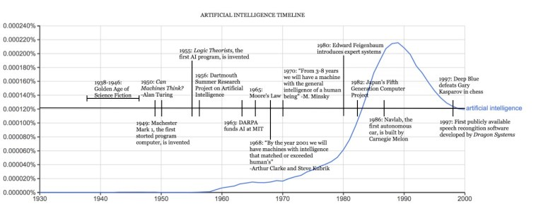

ARTIFICAIL INTELLIGENCE HISTORY
In the first half of the 20th century, science fiction familiarized the world with the concept of artificially intelligent robots.
It began with the “heartless” Tin man from the Wizard of Oz and continued with the humanoid robot that impersonated Maria in Metropolis.
By the 1950s, we had a generation of scientists, mathematicians, and philosophers with the concept of artificial intelligence culturally
assimilated in their minds. One such person was Alan Turing, a young British polymath who explored the mathematical possibility of
artificial intelligence. Turing suggested that humans use available information as well as reason in order to solve problems and make decisions,
so why can’t machines do the same thing? This was the logical framework of his 1950 paper, Computing Machinery and Intelligence in which he
discussed how to build intelligent machines and how to test their intelligence.
the Development in Last Five years
Five years later, the proof of concept was initialized through Allen Newell, Cliff Shaw, and Herbert Simon’s, Logic Theorist.
The Logic Theorist was a program designed to mimic the problem solving skills of a human and was funded by Research and Development
(RAND) Corporation. It’s considered by many to be the first artificial intelligence program and was presented at the Dartmouth Summer
Research Project on Artificial Intelligence (DSRPAI) hosted by John McCarthy and Marvin Minsky in 1956. In this historic conference,
McCarthy, imagining a great collaborative effort, brought together top researchers from various fields for an open ended discussion
on artificial intelligence, the term which he coined at the very event. Sadly, the conference fell short of McCarthy’s expectations;
people came and went as they pleased, and there was failure to agree on standard methods for the field. Despite this,
everyone whole-heartedly aligned with the sentiment that AI was achievable. The significance of this event cannot be undermined as
it catalyzed the next twenty years of AI research.

Artificail Intelligence Timeline
From 1957 to 1974, AI flourished. Computers could store more information and became faster, cheaper, and more accessible.
Machine learning algorithms also improved and people got better at knowing which algorithm to apply to their problem.
Early demonstrations such as Newell and Simon’s General Problem Solver and Joseph Weizenbaum’s ELIZA showed promise toward the goals
of problem solving and the interpretation of spoken language respectively. These successes, as well as the advocacy of leading researchers
(namely the attendees of the DSRPAI) convinced government agencies such as the Defense Advanced Research Projects Agency (DARPA) to fund AI
research at several institutions. The government was particularly interested in a machine that could transcribe and translate spoken
language as well as high throughput data processing. Optimism was high and expectations were even higher. In 1970 Marvin Minsky told Life
Magazine, “from three to eight years we will have a machine with the general intelligence of an average human being.” However, while the
basic proof of principle was there, there was still a long way to go before the end goals of natural language processing, abstract thinking,
and self-recognition could be achieved.